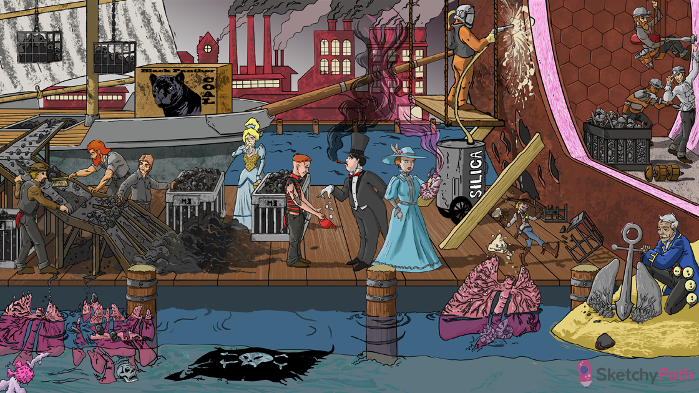

Particulates in air: pneumoconioses are interstitial lung diseases caused by the inhalation of organic and inorganic particulates
Restrictive corset: pneumoconioses can present with a restrictive lung disease picture (reduced lung compliance, FEV1, FVC, and TLC)
Larger particles on belt: larger particles (10-15 microns) will get trapped in upper airway
Sweeping medium particles: particles 5-10 microns in diameter are cleared by mucociliary transport in the trachea and bronchi
Small particles trapped at bifurcations: particles 1-5 microns in diameter lodge at the bifurcation of respiratory bronchioles → phagocytosed by macrophages
Small particles in cages: particles 1-5 microns in diameter are engulfed by alveolar macrophages → cytokine release
Dropping coins: cytokines (PDGF, IGF) released from macrophages are the cause of inflammation and fibrosis in pneumoconioses
Shark tattoo: collagen production from the release of growth factors leads to pulmonary fibrosis and restrictive lung disease
Cigar: tobacco smoke worsens symptoms and clinical course of all the pneumoconioses
Black panther coal: pulmonary anthracosis consists of asymptomatic pigment deposition in interstitial tissue and hilar nodes (contained in macrophage “dust-cells”)
Streaked black sails: streaks of anthracotic pigment are seen throughout the lungs (lymphatic spread of “dust cells”)
Hilar coal cages: anthracotic pigment is deposited in the hilar lymph nodes (lymphatic spread of “dust cells”)
Coal on lung coral: simple CWP is characterized by “coal macules” and focal fibrotic “coal nodules” (predominantly in the upper lobes)
X-ray flag: simple CWP shows small, rounded, opacities, in the upper lobes
Puffer fish in center: simple CWP produces centriacinar emphysema (mostly in the upper lobes)
Bigger chunks on lung coral: Complicated CWP is characterized by massive blackened opacities and fibrosis (predominantly in the upper lobes)
Sandblaster: exposure to silica occurs in foundries, mines, sandblasting (quartz is particularly fibrogenic)
Sand crystals on lung coral: silicotic nodules are found mostly in the upper lung fields
Whorled shell: silicotic nodules contain concentrically arranged collagen
Fragrance from whorled shell: silicotic nodule will appear as weakly birefringent particles under polarized light
Honeycomb pattern: nodules coalesce to form large scars with areas of honeycombing in between (cystically dilated)
Hilar shells: silicosis causes “egg-shell” calcification of the hilar lymph nodes (fibrosed lymph nodes)
Cowboy breaking cage: silicosis increases risk of TB infection (disrupt phagolysosome and promote apoptosis)
Big rust holes: In the setting of a pulmonary TB infection, nodules of silicotuberculosis can form, containing a central zone of cassation
Pink insulation: asbestos exposure can cause asbestosis: a pneumoconiosis characterized by slow progressive and diffuse pulmonary fibrosis)
Ship builder: asbestos can be found on ship plumbing insulation, ceiling tiles and floor tiles
Nails and screws: asbestos fibers may be straight, stiff, and brittle (amphibole) or curly and flexible (serpentine)
Straight nail in shirt: amphibole fibers can penetrate the epithelium and enter the interstitium (more pathogenic than “serpentine”)
Lower barnacles: the fibrosis of asbestosis predominantly affects the subpleural lower lung fields
Large buttons: pleural plaque formation is the most common manifestation of asbestos exposure (benign, no asbestos bodies)
Honeycomb shape: in asbestosis, fibrosis progresses to Large inelastic fibrous tissue segments with intervening areas of “honeycombing